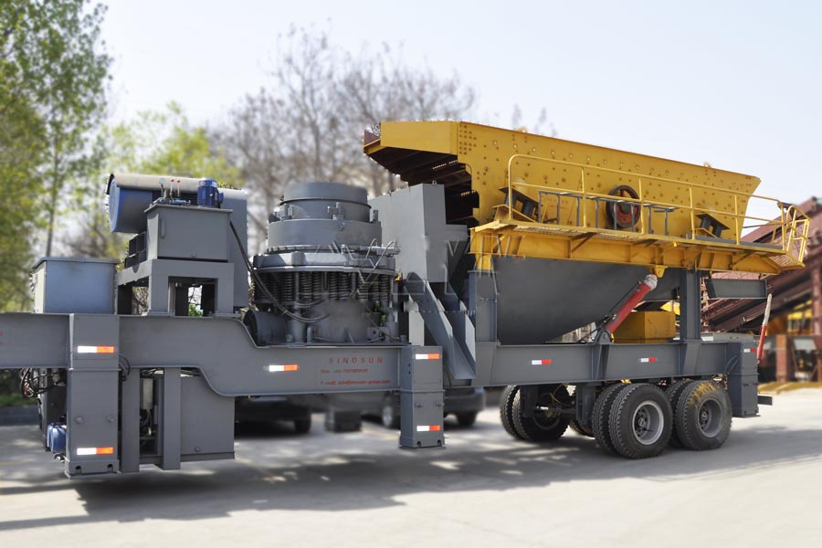
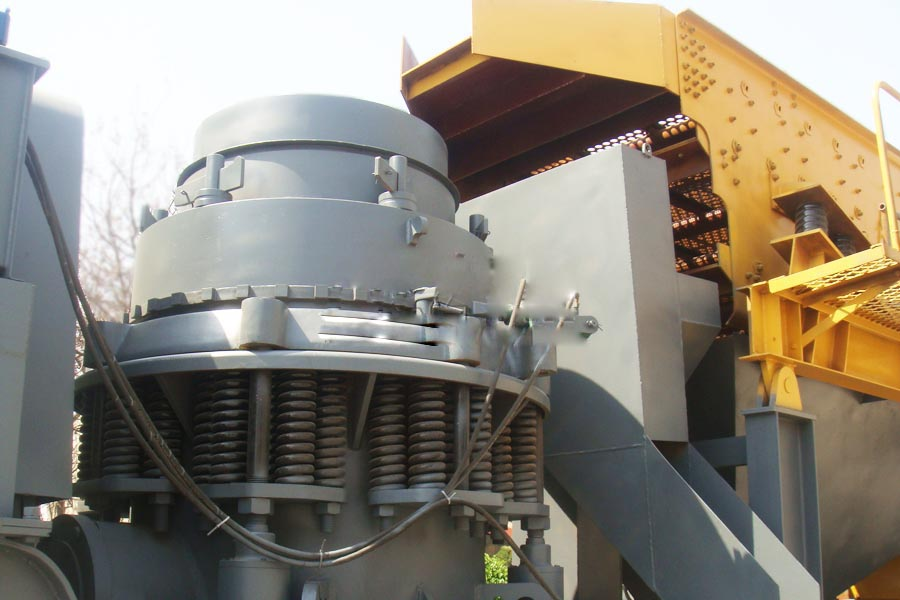

- Home >
- stone crusher >
- mobile cone crusher station

Construction waste crushing production line

Mobile construction waste crushing station for urban construction waste crushing.
mobile cone crusher station
Mobile cone crusher station Products
Mobile cone crusher station is mainly used in the field of crushing operations in aggregates production operations, depending on the use of stone and finished products, mobile cone crusher station instead of the crusher, producing higher hardness and a more fine-grained sand and gravel products . Configuring cone crusher adjusted according to actual needs of different crushing chamber, expanding the broken cone crusher mobile crushing station and scope of use of the area.

Mobile cone crusher station structures
1.the belt conveyor 2.vibrating screen, 3.vibrating screen motor 4. cone crusher 5.cone crusher motor 6.cabinet
Applications: ore crushing, construction aggregate production, water conservancy and hydropower, railways, road construction, chemical, easy maintenance, easy on-site maintenance
Applicable materials: granite, marble, basalt, limestone, quartz stone, river gravel, iron ore, copper ore, etc.
Mobile cone crusher station Features
1, unit equipment installation integration, the overall coordination and strong, compact layout reasonable, for on-site construction saves time and space, increased flexibility, while eliminating a lot of space infrastructure, greatly reducing the investment costs.
2, higher unit car chassis, body width of less than operating trailer, small turning radius, easy to travel in broken field area rugged harsh road environment more conducive stationed in the construction area.
3, the configuration of the cone crusher crushing play both appropriate function, but also in direct output of finished fine-grained sand and gravel, full-featured, directly reduce the cost of shipping materials. In addition the unit can also lengthen the crushed material directly into the transport wagon bucket, to facilitate the timely transport.
4, cone crusher hydrostatic principle, by the second vibration isolation, vibration equipment, more conducive to the implementation of the installation.
5, higher material layer cone crusher crushing efficiency, and stable, also largely save time.
6, device configuration flexible, stand-alone group of independent production, but also the composition of joint operations with the thick broken equipment. Unit standby diesel generator set this unit in addition to the power supply, but also can be targeted to a joint power unit system configuration process, greatly improving the adaptability of the device.
Mobile cone crusher station technical parameters
| Model | Shipping size | Cone Crusher |
Vibratory screen |
Conveyor | |||||||
|
L×W×H (mm) |
Weight (kg) |
Axle (kg) |
Kingpins load kg) |
Model |
Maximum feed (mm) |
Spout adjust -ment range(mm) |
model | model |
Capacity (t/h) |
Number of axes | |
| YDS50 | 11300×2780×4250 | 29000 | 19000 | 10000 |
PYB900
|
50-160 | 9-32 |
3YA1235
|
B800×7.2m | 40-170 | 2 |
| YDS80 | 15000×2865×4300 | 42900 | 29000 | 13900 |
PSGB0918
|
60-180 | 9-32 |
3YA1548
|
B1000×8.2m | 60-235 | 2 |
| YDS100 | 10000×2780×4160 | 22400 | 14300 | 8100 |
PYB1200
|
60-180 | 9-32 |
3YA1848
|
B1000×7.2m | 60-235 | 2 |
| YDS180 | 15500×2865×4300 | 55600 | 35600 | 20000 |
PSGB1321
|
80-240 | 9-51 |
3YA2154
|
B1000×8.2m | 70-390 | 3 |

Mobile cone crusher station works
Work materials directly into the cone crusher to the desired size, circular vibrating sieve through different specifications of the sand and gravel materials, finished products, and then by the conveyor output stacker or transport. Since this type mobile crushing station using a new and efficient cone crusher, crushing and processing of materials can be achieved in one step, breaking out of the product shape evenly, greatly improving the work efficiency.
Leave Me A Message, Now
If you have any questions regarding equipment prices, production line configuration or other problems, you can send a message to us, we will contact you soon.